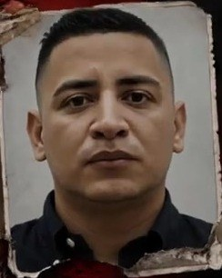
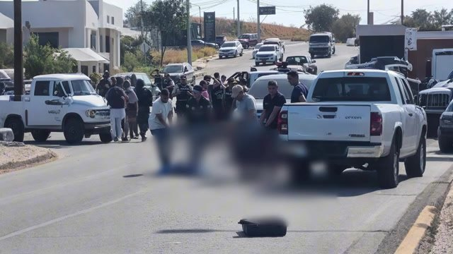
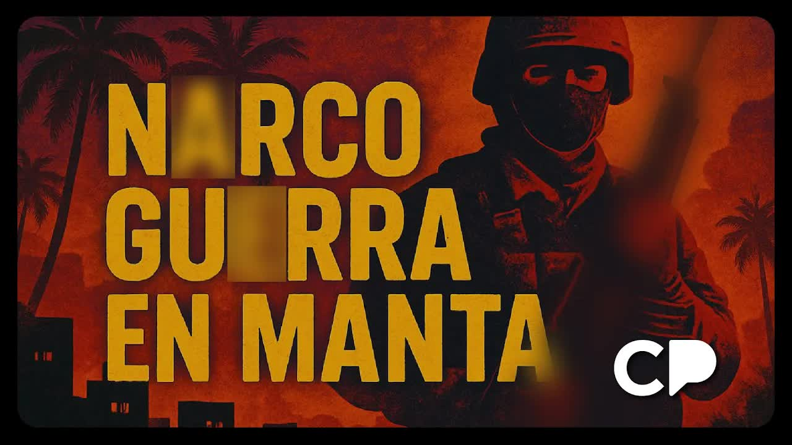
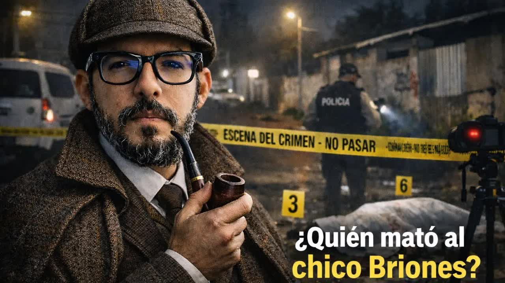
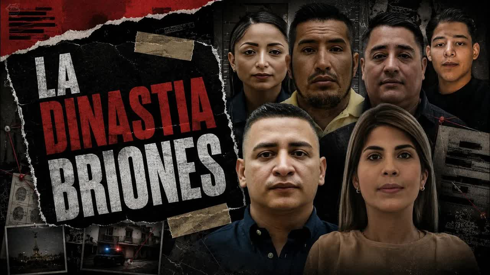
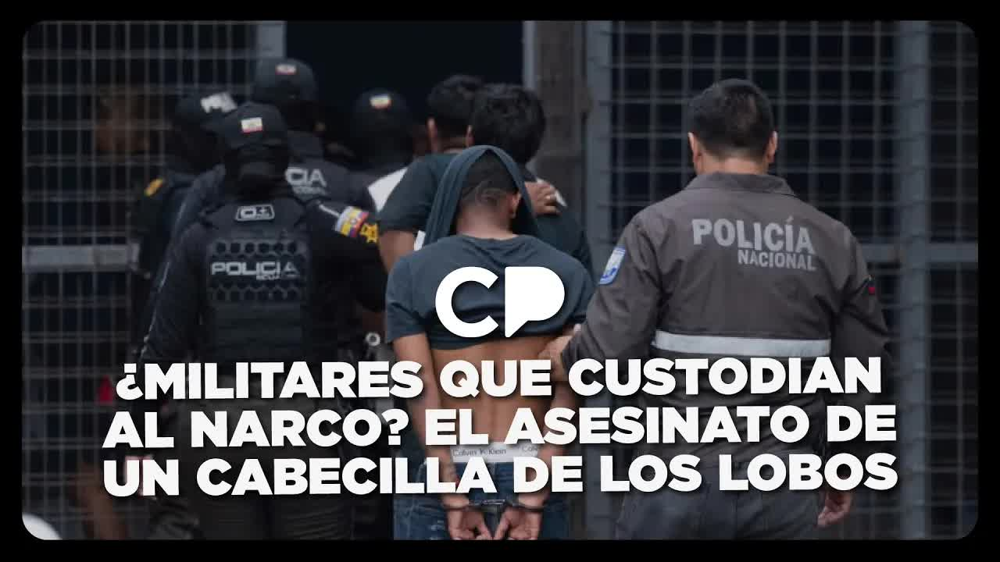
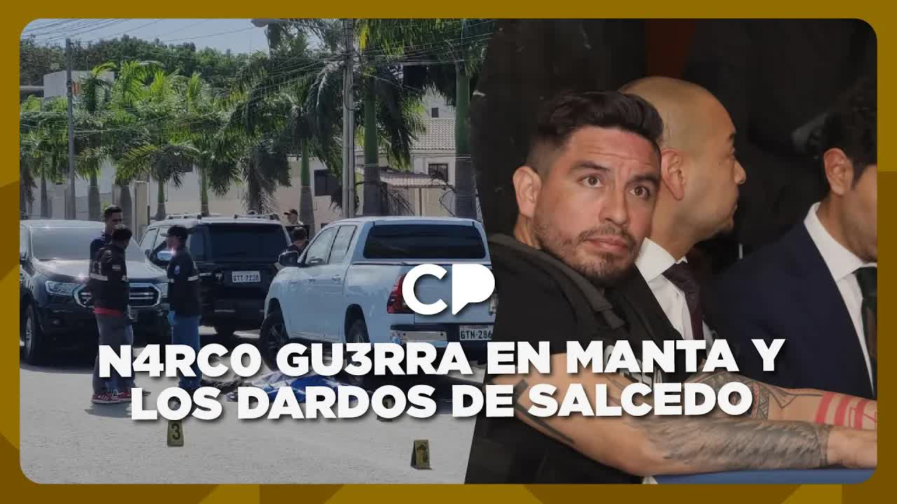
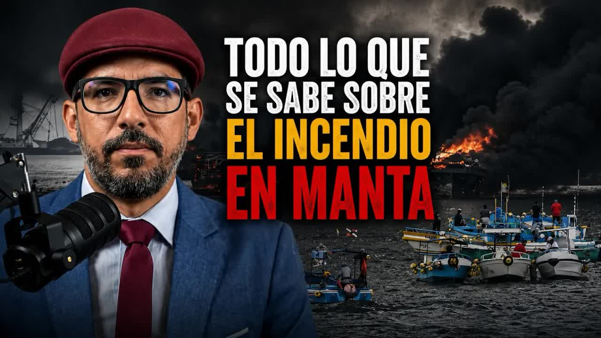

First wife
Carla Romero
The police came to suspect her in the 2021 wedding attack.
✝2022A restaurant in Barbasquillo, Manta
Murdered.

Flavio Leonardo Briones Chiquito was the son of fishermen and a boat captain. In less than a decade he went from loading drugs with his own hands to controlling the port of Manta, with police officers eating at his table, soldiers getting paid to protect him and a provincial prosecutor's office that did whatever he ordered. On July 16, 2025, men dressed as soldiers forced him out of his armored Maserati and killed him along with his wife and his two bodyguards. Over the next six months his brother, his 16-year-old son and his operational partner were also killed. No one has said who ordered any of those deaths.

Manta lives off its port and its tuna. When cocaine from Colombia and Peru needed an outlet to the Pacific, Ecuador became the port and Manta the gateway. In 2025 the country broke its record for violence with 9,216 homicides. Flavio Leonardo Briones Chiquito came from that gateway: the son of fishermen, a boat captain, just another dock worker. He started as an apprentice. He loaded the drugs himself. He had no armored car, no gun, and had never ordered anyone killed. He had a group of friends: an accountant who used Excel, a sailor who thought moving cocaine was like moving tuna, a security guard and a police officer from Jaramijó. They spent their nights drinking at the Poseidón hotel. According to intelligence reports cited by Boscán, he got his start under alias Gerald, the trafficker known as Ecuador's Pablo Escobar, who was extradited from Colombia to the United States in 2017. After that fall, Briones took control of many of his routes, and by the end of 2019 he was an established drug trafficker without belonging to any gang or having a known inner circle. When he was killed, the police said he was the number two of Los Lobos. Other sources always linked him to Los Pepes.
On one of those nights he met Génesis Michelle Mendoza Tuárez, very young, from a humble background, obsessed with narco-dramas and especially with La reina del sur. They married in 2021 at the wedding no one in Manta has forgotten: Elvis Crespo sang live. As she left the party, in a Porsche with her shoes in her hand, hitmen were waiting for her. A bullet severed a finger on her left hand. Both of them survived. In official records the attack was attributed to a minor local gang; the police always suspected Briones's ex-wife, Carla Romero, who would be murdered in 2022 at a restaurant in Barbasquillo. Months after the wedding, at a party in Salinas, the group's security guard, Andrés Moreira, said in front of everyone that he wanted to see him dead. Briones secretly asked each of his friends to kill him, and one by one they told him they were not murderers. Moreira was killed in May 2023. Gunmen on motorcycles burst into his wake firing submachine guns: four more dead and 18 wounded. Briones and Mendoza attended the funeral.
That's how the fairy tale turns into a narco-drama.
Andersson Boscán, Café La Posta, July 18, 2025
Then came the companies: fishing, exports, a construction firm, a seafood distributor. In 2021 they received the permits that allowed them to operate and export fish. Beneath those offices, according to the Attorney General's Office (Fiscalía), flowed the cocaine money between 2021 and 2024. At sea, the system ran like clockwork: speedboats leaving Jaramijó at dawn, packages tossed into the water whenever a drone appeared, GPS buoys, and fishing boats turned into floating gas stations for the speedboats crossing to Central America. But the money was the least of it. A senior commander of the National Police received 500,000 dollars a month. Soldiers in the area collected 50,000 a week. The provincial prosecutor's office acted according to what Briones ordered: if he asked for a raid, it happened; if he asked for a case file to disappear, it disappeared. Police officers and soldiers dined at his house and tipped him off before any operation. In Manta, people knew that if the couple walked into a restaurant, you had to leave. In September 2024 he was sentenced to ten years. He never went to prison. In police files he was a mid-value target. Ten months later he was dead.
On December 21, 2024, the fishing boat Patricia Lin left the port of Manta with 21 crew members and never returned. The state searched for it for 45 days with ships, helicopters and press releases; 21 families slept with their phones in their hands. What a Briones associate later told police intelligence, and what no outlet had reported, is that the search never made sense: the Briones Mendoza couple ordered the boat boarded because it was carrying a rival's cocaine, transferred the cargo to a vessel of their own, killed the 21 crew members and ordered the boat sunk. Months later, pieces of the hull turned up. One of the families' spokeswomen was murdered in September 2025. That, Mónica Velásquez said, is the power of the Briones: the state sailed around for 45 days pretending to search for 21 dead men whose whereabouts its own people knew.
That power also had a clumsy side. A year before the ambush, traffic officers stopped a Briones Mendoza car at a routine checkpoint and found almost two and a half million dollars in the trunk. They never notified the police: the officers robbed the bosses. According to Boscán, that explains why traffic officers then started being killed left and right without any authority explaining what was going on, and why hitmen showed up at the cemetery where one of them was being buried and killed several members of his family. Over the past year and a half, owners of fleets and boats in Manta had also been dying: the latest, a captain known as Capi Zapata, a neighbor of the Briones in Marina Blue, whom they had allegedly tried to extort in order to use his vessels. And sixty days before the ambush, the Attorney General's Office carried out a routine raid on one of the couple's properties. Nothing happened. Cases for money laundering and trafficking had been opened against them and then closed. For a couple of years, the justice system went around in circles with the couple.
From the ambush to the last partner: July 16, 2025, to March 19, 2026. Before that, in 2022, the first wife had already been killed.
The police came to suspect her in the 2021 wedding attack.
Murdered.
Alias el Mexicano, Capi Briones or Leo Briones. Son of fishermen, boat captain. To the police, the number two of Los Lobos; to other sources, the head of Los Pepes. Sentenced to ten years in September 2024 without ever going to prison.
Men in military uniforms staged a checkpoint, forced him out of his armored Maserati and killed him. He was 38.
According to the police, she took part in the shipments and in ordering hits. She lost a finger in the wedding attack.
Murdered by his side in the ambush. She was 31.
Flavio's brother.
Killed while eating breakfast.
He was claiming the boat Gold Tuna. He said he didn't want that world.
Hitmen on a motorcycle, 20 minutes after he sent a voice message about the boat. He was 16.
The older son wanted to move far away and take care of her.
In July 2025 the police accused him of spreading messages calling for attacks on police officers.
Murdered.
Pacheco, 47, was an active-duty soldier, and his partner worked as a prosecutor's secretary. Plúas, 35, had been discharged in 2022; it was his first day on the job.
Killed in the ambush along with the couple.
Ecuador's Pablo Escobar, according to Boscán. Briones started out with him. Extradited from Colombia to the United States in 2017; he never informed on anyone. After his fall, Briones took over many of his routes.
Leader of Los Lobos, above Briones in the hierarchy. A high-value target with no reward offered. Naval intelligence suspects him of being behind the burning of 35 boats in Manta in June 2026.
He runs Geopaxi, the company in whose name the Gold Tuna is registered. He negotiated the transfer of the boat with Briones's son. According to Boscán's source, he was the one who set the day, time and place where the young man was killed.

Jul 16, 2025On the morning of July 16, 2025, on the Manta-San Mateo road, in front of the Manabí school, three armored vehicles were traveling in a convoy. In the level-five armored Maserati were Briones, 38, and Mendoza, 31; in a pickup behind them, two bodyguards. Two military-style pickups blocked their way, and men in uniform ordered them to stop for a checkpoint. Because the armor could withstand bullets, the men forced them out. Once the three men were outside, instead of asking for their papers, the gunmen riddled them with bullets; she was killed inside the car. Forensic experts counted more than 60 pieces of ballistic evidence. Four dead in minutes. Crime scene investigators later found a burned pickup of the same description with the uniforms inside: they were not military-looking uniforms, they were military uniforms. That afternoon the Zone 4 commander, Giovanni Naranjo, made a remark that went by quickly on the newscasts.
It is possible that there was a leak of information about their movements.
Giovanni Naranjo, Zone 4 commander, July 16, 2025, quoted by Mónica Velásquez
The bodyguards were the key. The Joint Command issued a statement to distance the Armed Forces: Éder Luis Plúas Vargas, 35, had been discharged in 2022. Boscán spoke with his former employers in Manta: he was a bodyguard for a respectable organization, received an urgent last-minute offer with a salary that left no room for second thoughts, quit and went to work the next day. That was his last day. The statement fell apart with the other man: Carlos Benedicto Pacheco Cusme, 47, an active-duty soldier assigned to special security duties. His partner, Gisela Beatriz Vélez Pacheco, a lawyer and a prosecutor's secretary, arrived at the scene identifying herself as an official of the Attorney General's Office. For the police, that explained how Briones had firsthand information about the raids. The working hypothesis is that the Briones's own security detail was involved, and that is why their usual bodyguards were not there that day.

That night someone set off fireworks over Manta as if it were New Year's. According to Boscán and Velásquez, the ones who ordered the couple killed were Los Choneros loyal to Adolfo Macías, alias Fito, who at that moment was in La Roca awaiting extradition to the United States. In a video of the celebration, an armed man shouted cheers for Macías. Los Lobos, the most powerful organization in the country, had wanted to take advantage of Fito's fall to move into a province that had always been Chonero territory. The response was immediate: that same night, at the El Imperio brothel, five people were killed and pamphlets appeared saying Los Pepes were back, a gang the police believe is Los Lobos in disguise. The next day, five more dead and six wounded; the hitmen were looking for two Choneros and fired on a sports court and a parked car. A police officer was killed there. In the early hours of July 18, another was killed. Intelligence found that both sides were paying for the deaths of police officers and soldiers, whom they accused of taking part in the ambush; César Alfredo Cedeño, alias Transa, stood out in the messages. Between Tuesday and Thursday: 25 murders and 35 wounded. The police requested 250 officers for Manta and could only find private lodging for 50. Ecuador had just had four weeks of falling violent deaths. And the media were talking about the murder of a businesswoman.
When Briones fell, the chain did not close: it opened. On January 17, 2026, on Calle 13 in downtown Manta, his brother Orlando Gabriel Briones Chiquito was having breakfast at a shop. Armed men came in and killed him in his chair. Eleven days later, on January 28, in broad daylight on the waterfront, hitmen on motorcycles intercepted a vehicle. Inside was his 16-year-old son, the son of Flavio and Carla Romero. Twenty-five pieces of ballistic evidence. The boy had figured out what his father did for a living at age 9. A few days before he died, he gave an interview to a journalist who promised not to publish it while he was alive: he said people in Mexico had written to him asking him to carry on what his father had left behind, that he didn't want that world, that he only wanted to move far away and take care of his 3-year-old sister.
On January 30, Boscán revealed what, he said, the police did not know or pretended not to know: the boy's last hours. He had come to the most dangerous city in the world for him with no security, no hiding place and no weapons. The reason was the Gold Tuna, the boat all of Manta calls Leo Briones's boat, paid for with 10 million dollars in cocaine money. A Colombian businessman bought it from him through a company called Geopaxi, which is still active: according to Navy records, the registration under which it operates is in the company's name and valid until at least December 2026. On paper, the boat is listed in the name of an accountant whom Boscán described as a front. The boy believed those 10 million would secure his life and his sister's. The boat is not a fishing vessel: the police have seen it leave Manta for Jaramijó and move like a cargo ship, escorted by two or three Navy teams that charge 50,000 dollars each. No one looks at Geopaxi, no one investigates it, no one seizes anything from it.
A source close to the boy, who spent half the recording in tears, gave Boscán the boy's last voice message, recorded 20 minutes before he was killed and released with the source's permission. The boy said he had already gotten a letter from Geopaxi through his lawyer so he could anchor the boat that same day, and that all that was missing was for Alvarito to sign it. Álvaro is Álvaro Buitrago, who runs Geopaxi and had negotiated the transfer of the boat with Briones's son. According to what the boy confided to the source, it was this young man with a businessman's façade who summoned him that day, to that place, at that time. Instead of Álvaro, the hitmen showed up. That same day a soldier on guard duty at the dock saw the boy on the beach and, when he went back to secure the scene, sent Boscán a photo to let him know the kid was dead. One remained: on March 19, 2026, at the Coactur cooperative's gas station on the road to Portoviejo, hitmen caught up with César Alfredo Cedeño, alias Transa, Briones's main operational partner. He died hours later. Another person died with him.

In our country the only things that matter are the things that show up on TV: the deaths that show up on TV, the money laundering that shows up on TV and the narcos who show up on TV. Everything else is allowed to operate in the shadows, because everyone says they're afraid.
Andersson Boscán, January 30, 2026
On May 18, 2026, Mónica Velásquez, from exile, published the full case file: The Briones Dynasty. Six names, one network, less than four years. Carla Romero, Flavio Briones, Génesis Mendoza, Orlando Briones, Flavio's 16-year-old son and César Cedeño. Meanwhile, the government announced an operation against Los Lobos with 65 arrests and assets seized. No operation answered the questions that matter: who ordered the July 16 ambush, who ordered the killings of Orlando, his son and Transa, who ordered the Patricia Lin sunk. That, she said, is how a dynasty is liquidated: no queen, no king, no heirs. Just a port in Manta that keeps running as if nothing had happened.
The port kept burning. On June 8, 2026, a fire destroyed 14 fishing vessels and 21 small fiberglass boats at the Manta dock. The Interior Ministry ruled out an attack: the fire started on the vessel Jesús es mi Rey during maintenance work with diesel generators. Boscán showed the preliminary naval intelligence report a source had given him: witnesses reported explosions before the fire, the event took place amid the dispute between Los Lobos and Los Choneros over Manabí's maritime routes, and the pattern was consistent with sabotage or criminal retaliation. It was, the document said, the second major incident at the port in four months, after the case of the Gold Tuna, Briones's boat, which by then had been sunk. The naval officers' hypothesis pointed to La O, Celso Oviedo, leader of Los Lobos, with an alias Papelito as the one who carried it out. With Fito extradited, Fede in prison and Celso Moreira about to be extradited, Los Choneros in Manabí were left leaderless and Los Lobos took control of Manta. They burned 35 boats in a single day.
Updated September 5, 2026
Briones's mentor is extradited from Colombia to the United States. Briones takes over many of his routes.
Briones is now a major drug trafficker with no gang and no known inner circle.
He marries Michelle Mendoza; Elvis Crespo sings. As they leave, an attack costs the bride a finger. That year they receive permits to operate and export.
His first wife is murdered at a restaurant in Barbasquillo.
The group's security guard is killed. At his wake, gunmen on motorcycles leave four dead and 18 wounded.
Traffic officers stop a Briones car and keep almost 2.5 million dollars. Officers start dying.
He is sentenced. He never goes to prison.
The fishing boat leaves Manta with 21 crew members and disappears. The search lasts 45 days.
Sixty days before the killing, the Attorney General's Office raids one of the couple's properties. Nothing happens.
Men in military uniforms stage a checkpoint on the Manta-San Mateo road and kill Briones, Mendoza and two bodyguards. Fireworks over Manta.
Five dead at El Imperio, Los Pepes pamphlets, two police officers murdered. 25 dead and 35 wounded in three days.
Café La Posta identifies the couple the media were calling businesspeople and explains how organized crime in Manabí is being reshaped.
One of the spokeswomen for the Patricia Lin families is murdered.
Briones's brother is killed while eating breakfast on Calle 13.
Hitmen on a motorcycle kill the 16-year-old son on the waterfront. He had gone for the Gold Tuna.
Boscán publishes the boy's last voice message, Geopaxi's name and the meeting with Álvaro Buitrago.
The operational partner is killed at a gas station on the road to Portoviejo.
Mónica Velásquez publishes the full case file.
35 vessels are burned in Manta. Naval intelligence speaks of criminal retaliation between Lobos and Choneros.
Alias el Mexicano or Capi Briones. The son of fishermen who came to control the port of Manta. Sentenced to ten years in 2024 without going to prison.
His wife. The queen of the Pacific, according to Boscán. She took part in the business and in ordering hits.
His 16-year-old son. He was claiming the boat Gold Tuna. He said he didn't want that world.
Flavio's brother.
Main operational partner. Accused by the police in July 2025 of inciting attacks on police officers.
Bodyguard. Active-duty soldier assigned to special security duties. His partner was a prosecutor's secretary.
Bodyguard. Former soldier discharged in 2022. It was his first day on the job.
He runs Geopaxi, the company that holds the Gold Tuna's registration. He negotiated the transfer of the boat with Briones's son and, according to Boscán's source, set up the meeting on the day of the killing.
Leader of Los Lobos, above Briones. Naval intelligence suspects him of the June 2026 boat burnings.

Leader of Los Choneros. His loyalists allegedly ordered the ambush while he waited in La Roca.
Commander of the National Police's Zone 4. He acknowledged a possible leak about Briones's movements.
Photos via Wikimedia Commons. Adolfo Macías: Penitenciaría (CC BY-SA 4.0).
It issued a statement distancing the institution: Éder Plúas had been discharged in 2022. It did not explain why Carlos Pacheco Cusme, an active-duty soldier, was guarding a drug trafficker.
He said on the afternoon of the killing that there may have been a leak of information about the couple's movements.
Only after Briones's death did it call his the biggest money laundering case in Ecuador's history, as Boscán recounted. While he was alive, it opened and closed money laundering and trafficking cases against him.
On the June 8, 2026, fire, it ruled out an attack: the fire started on the vessel Jesús es mi Rey during mechanical and electrical maintenance work with diesel generators.




The curse of a surname. An entire family wiped off Ecuador's criminal map. It is one of the bloodiest and most shocking stories in our recent history. The story of a narco dynasty that, from one moment to the next, went from total power over Manta to the cemetery. Carla Romero, murdered in a restaurant in Barbasquillo. Flavio Briones, her ex-husband, murdered with 60 rifle shots south of Man…
Read the full transcriptI'm going to tell you something the police don't know. What were the last hours like for [name withheld], the son of the kingpin Leo Briones, who was silenced this week at just 16 years old? No, no, no, I'm not going to lie to you, I never do. Most likely the police do know, but act as if they don't. Same with the prosecutor's office, same with the press, same with the people, because in Manabí everybody knows everything, but people are very fa…
Read the full transcriptpet names and and you don't remember exactly when, but he started joking about personal things, with ideas about going out on the weekend, for example. You don't find it very funny. I suppose you don't find it funny because you're a very young woman, very pretty, just starting out in life, and this man who is your boss, sorry for the cliché, could be your father, really, he's twice your age, 46, and on top of that they have a…
Read the full transcriptWhat is going on in Manta? Why are 25 people suddenly murdered between Tuesday and Thursday of this week? 35 people wounded between Tuesday and Thursday of this week. I'm not counting the dead from early this morning, yes, and there are quite a few of them, too. Uh, what's happening? What's going on? Where does it start? It all starts on Tuesday. Moni, what happens early Tuesday morning? That's right. Four people were riddl…
Read the full transcriptor or sometimes most of the time, I think, because they're defending some politician. For example, when Ecuavisa reported that the businessman Rubén Cherres had died, whom they never called a drug trafficker. But that's another story. Today I'm going to tell you the story of Leonardo Briones and Michel Mendoza, who was his woman, his wife, and how their murder is going to open a new wave of violence for Manabí and maybe for Ecua…
Read the full transcriptregistration? Because the information that sources have started giving naval intelligence is related to what I've been telling you this morning, the hypothesis that Vidion is behind the great burning of boats in Manta. The crazy video which, as I've told you, is Celso Oviedo Zambrano Casanova, alias Celso Loco Vidio or La O, and who could be uh behind behind uh this great burning of boats. At least that's…
Read the full transcriptTranscripts from each show's automatic captions. They have not been corrected by hand: use them to find a phrase and jump to the exact minute in the video, not as verbatim quotes.
One of the spokeswomen for the 21 families is murdered.
Briones's brother, son and partner are killed. No operation identifies the killers.
35 boats burned in Manta; naval intelligence speaks of criminal retaliation. Los Lobos control the city.
The money laundering investigations into the family and its companies moved forward after publication.
The bunker, the letter, the video call and the plane to Brooklyn
2026Micaela Morales, Wendy Landa, Bryan Soria and the money of Marino's inner circle
2026A chokehold, threats using his ID card and a principal who asked for silence
The facts, names and figures in this case file come from what Mónica Velásquez and Andersson Boscán said on air between July 2025 and June 2026, drawing on police, naval and military intelligence sources they cite. The attribution of murders to the Briones Mendoza couple are police hypotheses described on the shows; no one has been charged over them. The names of surviving minor victims have been withheld.